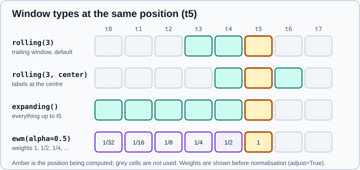

Rolling, Expanding and EWM
|
This content was generated with the assistance of AI and should be verified against the official documentation before being relied on in production. |
A window function computes a statistic over a sliding (or growing) set of neighbouring observations: a 7-day
moving average, a running maximum, an exponentially weighted volatility. pandas has three families, all created by a
method call that is followed by an aggregation, just like groupby: rolling for a window of fixed size or duration,
expanding for a window that grows from the start, and ewm for exponentially decaying weights. This page targets
pandas 3.1 on Python 3.13 or 3.14 and was checked in October 2026; every example was run with Python 3.13 and pandas
3.1.0 and the printed output is the real output.
Windows pair naturally with time series, with resampling (which changes the frequency, whereas a window keeps it) and with group by (windows inside groups). The same ideas in SQL are the window functions of aggregate and window functions.
The examples use these imports and a short series:
import numpy as np
import pandas as pd
s = pd.Series([1, 3, 2, 6, 4, 8, 5], name="x", dtype="float64")
print(s.tolist())[1.0, 3.0, 2.0, 6.0, 4.0, 8.0, 5.0]The four window objects
| Window | Created by | Time-based windows | Chained after groupby |
method="table" |
|---|---|---|---|---|
Rolling |
|
Yes |
Yes |
Yes |
Weighted |
|
No |
No |
No |
Expanding |
|
No |
Yes |
Yes |
Exponentially weighted |
|
No (but |
Yes |
No |
Windowing works on numeric data (integers and floats) and always returns float64; a window over strings raises
DataError: No numeric types to aggregate. Every window object offers the same family of aggregations: count,
sum, mean, median, min, max, std, var, skew, kurt, quantile, rank, sem, corr, cov, apply
and agg. pandas 3.0 added first, last and nunique to Rolling.

Rolling windows
rolling(window) takes either an integer (the number of observations) or a time offset such as "2D" (a duration, for
time-indexed data). The default window is trailing: the value at position i uses the observations i - window + 1
to i, and the label sits at the right edge.
print(s.rolling(3).mean().tolist())
print(s.rolling(3).agg(["min", "max", "median"]))
print(s.rolling(3).apply(lambda w: w.max() - w.min(), raw=True).tolist())[nan, nan, 2.0, 3.6666666666666665, 4.0, 6.0, 5.666666666666667]
min max median
0 NaN NaN NaN
1 NaN NaN NaN
2 1.0 3.0 2.0
3 2.0 6.0 3.0
4 2.0 6.0 4.0
5 4.0 8.0 6.0
6 4.0 8.0 5.0
[nan, nan, 2.0, 4.0, 4.0, 4.0, 4.0]Source: pandas user guide: Rolling window.
The first two results are NaN: a fixed window needs window valid observations. That is controlled by min_periods.
min_periods
min_periods is the minimum number of non-missing observations a window needs to produce a value. It defaults to
window for fixed windows (so missing values and the start of the series give NaN) and to 1 for time-based windows.
Lowering it gives a partial result at the edges; raising it above the window size is an error.
print(s.rolling(3, min_periods=1).mean().tolist())
n = pd.Series([1, np.nan, 3, 4.0])
print(n.rolling(2).sum().tolist())
print(n.rolling(2, min_periods=1).sum().tolist())[1.0, 2.0, 2.0, 3.6666666666666665, 4.0, 6.0, 5.666666666666667]
[nan, nan, nan, 7.0]
[1.0, 1.0, 3.0, 7.0]center
With center=True the label sits in the middle of the window, so the result is not shifted against the data. For
an even window the extra observation is on the left. The result is NaN at both ends, and the centred window looks at
future values, so do not use it as a feature in a forecasting model.
print(s.rolling(3, center=True).mean().tolist())[nan, 2.0, 3.6666666666666665, 4.0, 6.0, 5.666666666666667, nan]Source: pandas user guide: Rolling window.
step
step evaluates the window only at every n-th position and returns a shorter result, which saves work when you
only need a thinned-out series:
print(s.rolling(3, step=2).mean().tolist()) # positions 0, 2, 4, 6[nan, 2.0, 4.0, 5.666666666666667]Source: pandas.DataFrame.rolling.
Time-based windows
When the index is a DatetimeIndex (or you give on="column") the window can be a duration. A time-based window
contains the observations in the time interval, however many there are, so unevenly spaced data is handled
correctly. The index must be monotonic (increasing or decreasing); otherwise rolling raises ValueError: index values
must be monotonic.
idx = pd.to_datetime(
["2026-10-01 00:00:00", "2026-10-01 00:00:01", "2026-10-01 00:00:03",
"2026-10-01 00:00:04", "2026-10-01 00:00:06"]
)
t = pd.DataFrame({"x": [1, 2, 3, 4, 5]}, index=idx)
print(t.rolling("2s").x.sum().tolist())
t2 = t.reset_index(names="ts")
print(t2.rolling("2s", on="ts")["x"].sum().tolist())[1.0, 3.0, 3.0, 7.0, 5.0]
[1.0, 3.0, 3.0, 7.0, 5.0]The offset accepts any fixed frequency string: "2s", "15min", "3h", "7D". Calendar offsets such as months
or weeks ("1ME", "1W") are not fixed durations and raise ValueError; write a week as "7D", or use a
VariableOffsetWindowIndexer (below) or resample.
closed
closed says which window endpoints are included: "right" (the default), "left", "both" or "neither". The
default includes the current observation and excludes the one exactly one window length earlier. Use "left" or
"neither" when the value at time t must not use t itself, which avoids leaking the present into a feature that
should describe the past.
for closed in ["right", "left", "both", "neither"]:
print(f"{closed:8}", t.rolling("2s", closed=closed).x.sum().tolist())
print("centred ", t.rolling("2s", center=True).x.sum().tolist())right [1.0, 3.0, 3.0, 7.0, 5.0]
left [nan, 1.0, 2.0, 3.0, 4.0]
both [1.0, 3.0, 5.0, 7.0, 9.0]
neither [nan, 1.0, nan, 3.0, nan]
centred [3.0, 2.0, 7.0, 4.0, 5.0]closed is also accepted for fixed integer windows.
Custom windows with indexers
For windows that are neither "the last n" nor "the last duration", pass an indexer object as the window. It returns, for every position, the start and end positions of the window.
-
FixedForwardWindowIndexer(window_size=n)is a forward-looking window: the value atiusesitoi + n - 1. It is for look-ahead analyses such as "the maximum of the next three days", for example to build a prediction target, and the last rows are NaN. -
VariableOffsetWindowIndexer(index=..., offset=...)gives time windows of non-fixed offsets such as business days. -
A subclass of
BaseIndexerimplementsget_window_bounds(self, num_values, min_periods, center, closed, step)and returns two integer arrays,startandend.
from pandas.api.indexers import BaseIndexer, FixedForwardWindowIndexer, VariableOffsetWindowIndexer
fwd = FixedForwardWindowIndexer(window_size=3)
print(s.rolling(fwd).sum().tolist()) # x[i] + x[i+1] + x[i+2]
print(s[::-1].rolling(3).sum()[::-1].tolist()) # same result by reversing, rolling and reversing back
class NextTwo(BaseIndexer):
"""A forward window of window_size observations, shortened at the end."""
def get_window_bounds(self, num_values, min_periods, center, closed, step):
start = np.arange(num_values, dtype=np.int64)
end = np.minimum(start + self.window_size, num_values).astype(np.int64)
return start, end
print(s.rolling(NextTwo(window_size=2), min_periods=1).sum().tolist())
days = pd.DataFrame({"x": range(10)}, index=pd.date_range("2026-10-01", periods=10, freq="D"))
bd = VariableOffsetWindowIndexer(index=days.index, offset=pd.offsets.BDay(2))
print(days.rolling(bd).sum()["x"].tolist())[6.0, 11.0, 12.0, 18.0, 17.0, nan, nan]
[6.0, 11.0, 12.0, 18.0, 17.0, nan, nan]
[4.0, 5.0, 8.0, 10.0, 12.0, 13.0, 5.0]
[0.0, 1.0, 3.0, 6.0, 10.0, 14.0, 11.0, 13.0, 15.0, 17.0]Weighted windows
win_type applies a window function from scipy.signal.windows as weights inside a fixed-size rolling window. SciPy
must be installed, and the shape parameters of the window are passed to the aggregation (mean, sum, var, std):
print(s.rolling(3, win_type="triang").mean().round(3).tolist())
print(s.rolling(3, win_type="gaussian").mean(std=1.0).round(3).tolist())[nan, nan, 2.25, 3.25, 4.5, 5.5, 6.25]
[nan, nan, 2.178, 3.37, 4.356, 5.644, 6.082]Source: pandas user guide: Weighted window.
Weighted windows cannot be combined with time-based offsets or with groupby, and only a few aggregations are
supported. Commonly used types are boxcar, triang, hamming, hann, blackman, bartlett, gaussian,
exponential and kaiser; the full list is in the SciPy documentation.
Expanding windows
expanding(min_periods=1) grows from the first observation, so the value at i uses everything up to and including
i. It is the same as a rolling window of the full length. It gives running statistics.
print(s.expanding().mean().round(3).tolist())
print(s.expanding(min_periods=3).max().tolist())
df = pd.DataFrame({"a": [1.0, 2.0, 3.0, 4.0], "b": [4.0, 3.0, 2.0, 1.0]})
print(df.expanding().agg(["sum", "mean"]))[1.0, 2.0, 2.0, 3.0, 3.2, 4.0, 4.143]
[nan, nan, 3.0, 6.0, 6.0, 8.0, 8.0]
a b
sum mean sum mean
0 1.0 1.0 4.0 4.0
1 3.0 1.5 7.0 3.5
2 6.0 2.0 9.0 3.0
3 10.0 2.5 10.0 2.5Expanding has no window argument, and it supports groupby, apply, and method="table".
Source: pandas.DataFrame.expanding.
Exponentially weighted windows
ewm weights every past observation by a factor that decays exponentially with its age, so recent values count
most and no data ever drops out. You give exactly one of four ways to set the decay:
| Argument | Meaning | Relation to alpha |
|---|---|---|
|
Roughly the "N-period" moving average |
alpha = 2 / (s + 1) |
|
Centre of mass of the weights |
alpha = 1 / (1 + c) |
|
Number of periods for a weight to halve |
alpha = 1 - exp(log(0.5) / h) |
|
The smoothing factor directly |
alpha |
print(s.ewm(span=3).mean().round(3).tolist())
print(s.ewm(com=1).mean().round(3).tolist()) # com=1 is alpha=0.5, the same as span=3
print(s.ewm(halflife=2).mean().round(3).tolist())[1.0, 2.333, 2.143, 4.2, 4.097, 6.079, 5.535]
[1.0, 2.333, 2.143, 4.2, 4.097, 6.079, 5.535]
[1.0, 2.172, 2.094, 3.619, 3.755, 5.176, 5.119]adjust
adjust=True (the default) divides by the sum of the weights, so early values are not biased towards the start. The
weights are (1 - alpha) to the power of the age, and the result is a weighted average of all observations seen
so far. adjust=False uses the recursion y\[0] = x\[0] and y\[t] = (1 - alpha) * y\[t-1] + alpha * x\[t], which is the
classical "EMA" that charting tools use. The two agree for a long series (the difference decays), but differ at the
start:
print(s.ewm(alpha=0.5, adjust=True).mean().round(3).tolist())
print(s.ewm(alpha=0.5, adjust=False).mean().round(3).tolist())[1.0, 2.333, 2.143, 4.2, 4.097, 6.079, 5.535]
[1.0, 2.0, 2.0, 4.0, 4.0, 6.0, 5.5]Missing values: ignore_na
With the default ignore_na=False the positions of the weights count, so a missing observation still ages the
earlier values. With ignore_na=True missing observations are skipped as if they were not there:
a = pd.Series([3, np.nan, 5])
print(a.ewm(alpha=2 / 3, adjust=False, ignore_na=False).mean().round(6).tolist())
print(a.ewm(alpha=2 / 3, adjust=False, ignore_na=True).mean().round(6).tolist())[3.0, 3.0, 4.714286]
[3.0, 3.0, 4.333333]Irregular spacing: times
Pass times (a datetime-like array or column name) together with a time-valued halflife and the weights decay with
the real elapsed time, so a long gap makes the earlier observations count for less than the same number of observations close together:
times = pd.to_datetime(["2026-01-01", "2026-01-02", "2026-01-05"])
print(pd.Series([1.0, 2.0, 3.0]).ewm(halflife="1 day", times=times).mean().round(4).tolist())[1.0, 1.6667, 2.7895]Variance, standard deviation and bias
ewm(...).var(), std() and cov() take bias: the default bias=False applies a correction factor that tends to
N / (N - 1) for equal weights, bias=True returns the biased estimate. corr() and cov() work on pairs like the
rolling versions.
Streaming updates: online
For a stream of data you can compute the next values without recomputing the whole history. ewm(...).online()
(with the numba engine) keeps the state; call mean() once on the initial data and then mean(update=new_rows):
x = pd.DataFrame({"a": [1.0, 2.0, 3.0, 4.0, 5.0]})
try:
online = x.head(3).ewm(0.5).online()
print(online.mean().a.tolist())
print(online.mean(update=x.tail(2)).a.tolist())
print(x.ewm(0.5).mean().a.tolist()) # same values computed in one go
except ImportError as exc:
print("numba is not installed:", exc)[1.0, 1.75, 2.615384615384615]
[3.55, 4.520661157024794]
[1.0, 1.75, 2.6153846153846154, 3.55, 4.520661157024794]Source: pandas.DataFrame.ewm.
Pairwise windows: corr and cov
rolling(...).corr(other) and cov(other) compute the statistic between each column and another Series, or between
the matching columns of two frames. With pairwise=True and no other they compute every pair and return a result with
a MultiIndex (position, column):
rng = np.random.default_rng(0)
f = pd.DataFrame({"A": rng.normal(size=6), "B": rng.normal(size=6)})
f["C"] = f["A"] * 2 + rng.normal(scale=0.1, size=6)
print(f["A"].rolling(4).corr(f["C"]).round(3).tolist())
print(f.rolling(4).corr(pairwise=True).dropna().round(2).head(6))[nan, nan, nan, 0.991, 1.0, 0.999]
A B C
3 A 1.00 -0.49 0.99
B -0.49 1.00 -0.56
C 0.99 -0.56 1.00
4 A 1.00 -0.24 1.00
B -0.24 1.00 -0.22
C 1.00 -0.22 1.00Missing values are excluded pairwise, and a matrix of rolling covariances is not guaranteed to be positive semi-definite.
Windows and groups
After groupby the window is computed inside each group and the group key becomes an extra index level; use transform
to keep the original index:
g = pd.DataFrame({"k": list("aaabbb"), "v": [1, 2, 3, 10, 20, 30]})
print(g.groupby("k")["v"].rolling(2).mean())
print(g.groupby("k")["v"].transform(lambda x: x.rolling(2).mean()).tolist())
print(g.groupby("k")["v"].expanding().sum().tolist())k
a 0 NaN
1 1.5
2 2.5
b 3 NaN
4 15.0
5 25.0
Name: v, dtype: float64
[nan, 1.5, 2.5, nan, 15.0, 25.0]
[1.0, 3.0, 6.0, 10.0, 30.0, 60.0]Windows never cross a group boundary, which is what you want for per-entity features such as a rolling mean per customer.
Source: pandas user guide: Rolling window.
Custom functions and the numba engine
apply(func, raw=..., engine=..., engine_kwargs=...) calls a function on each window. With raw=True the function gets
a NumPy array and raw=False a Series (slower). engine="numba" (with raw=True) compiles the function and the
window loop, and engine_kwargs goes to numba.jit (nopython, nogil, parallel). mean, median, max, min,
sum, std and var also accept engine.
try:
print(s.rolling(3).apply(lambda w: np.ptp(w), raw=True, engine="numba").tolist())
dfm = pd.DataFrame({"a": [1.0, 2.0, 3.0, 4.0], "b": [2.0, 4.0, 6.0, 8.0]})
print(dfm.rolling(2, method="table", min_periods=0).mean(engine="numba"))
except ImportError as exc:
print("numba is not installed:", exc)[nan, nan, 2.0, 4.0, 4.0, 4.0, 4.0]
a b
0 1.0 2.0
1 1.5 3.0
2 2.5 5.0
3 3.5 7.0method="table" (numba only) passes the whole window as a 2-D array so the function can use all columns at once, for
example for a rolling regression. See User-Defined Functions and
Enhancing Performance.
Source: pandas user guide: Rolling apply.
Pitfalls
-
Windows only look back unless you ask otherwise. The default label is at the right edge, so a trailing mean describes the past.
center=TrueandFixedForwardWindowIndexerlook ahead; using them for features leaks the future into the model. -
The start of the series is NaN. With
min_periodsequal to the window, the firstwindow - 1values are NaN. Check how many rows you lose before comparing series. -
Missing values. A window with fewer than
min_periodsvalid values gives NaN, so one NaN in a fixed window can blank outwindowresults. Fill or interpolate first, or lowermin_periods. -
Irregular data with an integer window.
rolling(7)means "7 rows", not "7 days"; with gaps it spans longer. Userolling("7D")for a duration. -
The window must be sorted. A time-based window on a non-monotonic index raises an error; sort the index first.
-
Integer data becomes float. The result is always
float64, even for integer input andcount. -
Numerical error.
mean,sum,varandstduse compensated (Kahan) summation but can still lose precision when values differ by about 1e15 in magnitude. -
Speed. The built-in aggregations are implemented with an efficient online algorithm. A Python function passed to
applyis called once per window, which is slow for big data. -
Resampling is not rolling.
resample("7D").mean()produces one value per week;rolling("7D").mean()produces one per original row.
What changed since older books and tutorials
| Older code or claim | Today |
|---|---|
|
Removed long ago; use |
Aliases such as |
|
|
|